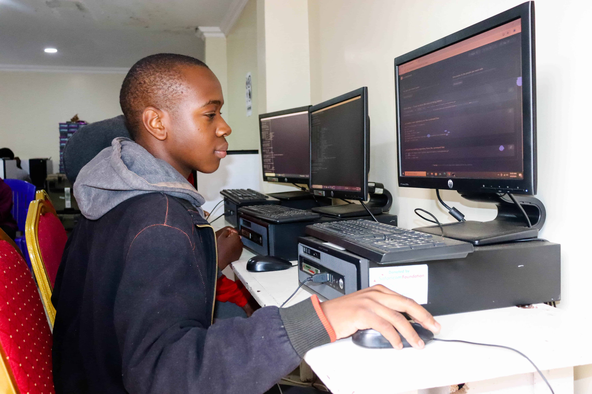

My name is Surnley Baraka. I love listening to cool music .I would like to pursue a career in medicine.

My project
My hobbies
I love singing and having fun.Most of the time I enjoy watching educative movies. I also love adventures.
I love helping those in need. My main goal is to cnange and transform lives just like how NRCF transformed my life.
My favourite subject
My favourite subject is mathematics because I love calculating math.
My subjects
Mathematics
English
Kiswahili
History
Geography
Computer
Chemistry
Business
Biology
CRE
Physics
Music
Games
Hockey
Football
Basketball
Tennis ball
Rugby
Description of the games
Hockey
Is a fast-placed sport played on ice or on a field where two teams compete to score goals by hottting a ball into opponents goal using a stick.
Football
Is a game played by 22 people eleven on each side.
Basketball
Is a team sport where 2 teams of 5 players each compete to score points by shooting the ball through the opposing team`s hoop which is 10 feet above the ground
Tennisball
Sport played either professinally and recreationally ,either individually or in teams.
Rugby
This is a team of sports that involves 2 teams competing to score points by carrying,passing and kicking the ball.